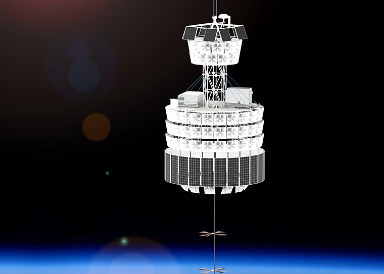
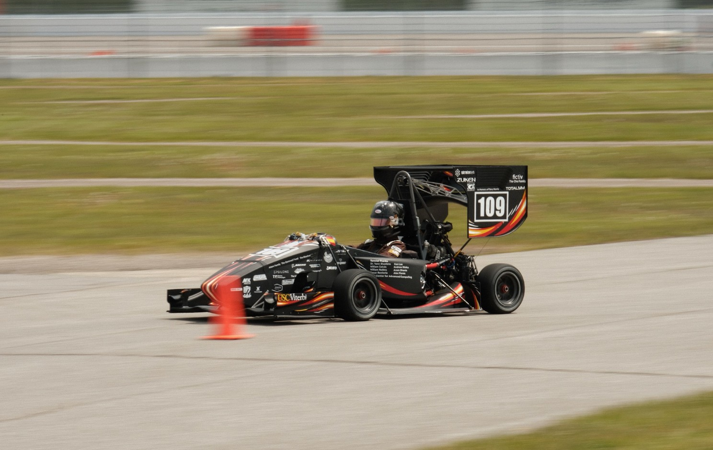
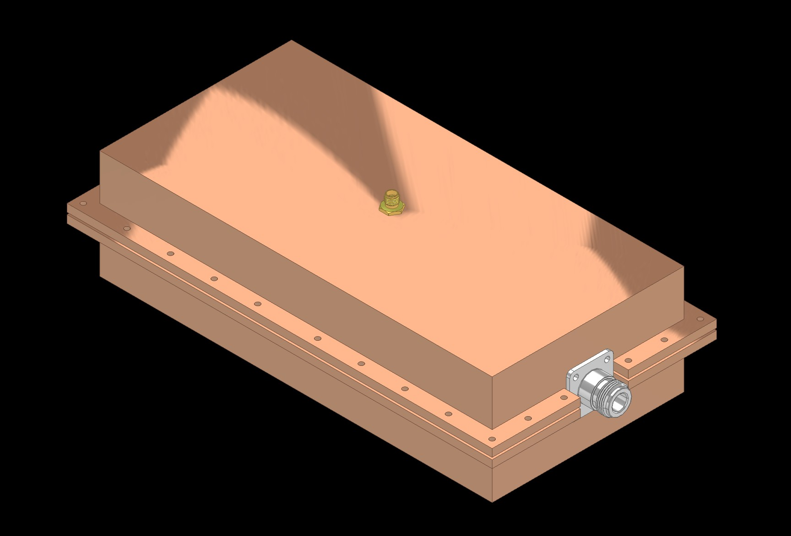
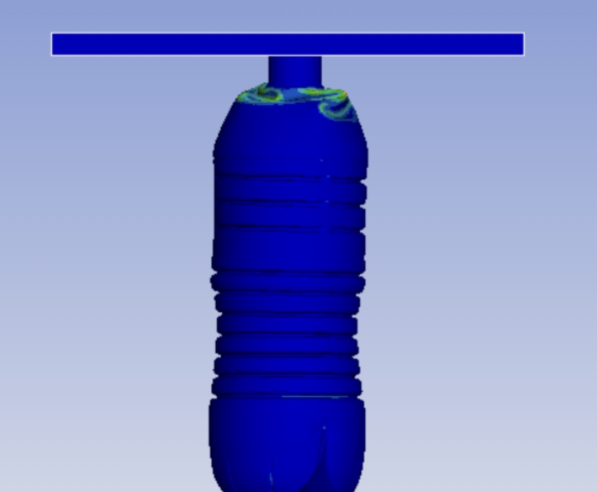
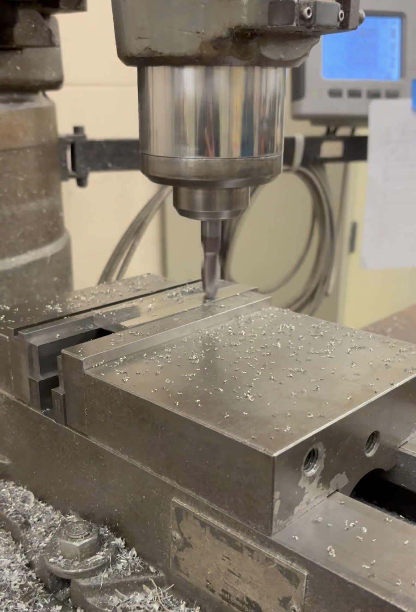
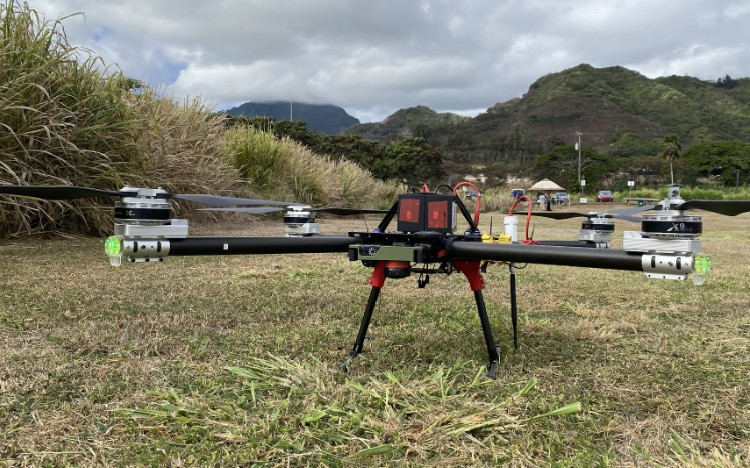
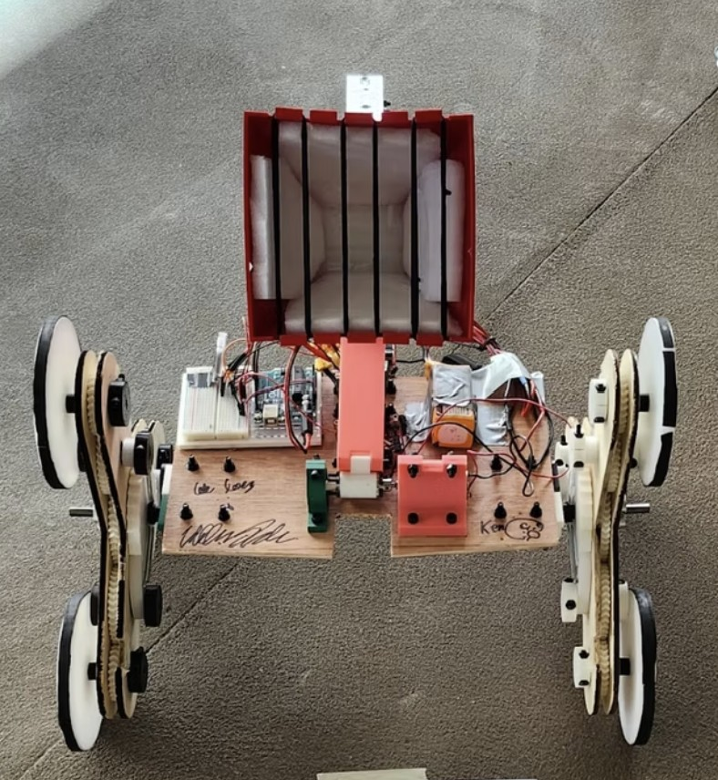

NASA Payload for Ultrahigh Energy Observations — Undergraduate Research Assistant. Assisted in the design, testing, and integration of the Antartic Neutrino detector payload at the NASA Columbia Scientific Balloon Facility.

USC Racing (Formula SAE) — Powertrain Engineer. Designed, manufactured, and tested the Powertrain and cooling subsystem for the SCR26 race car (600cc, inline 4-cylinder Yamaha R6), assisting in the team securing 7th out of 110 teams overall at the 2026 FSAE Michigan competition.

Bio-Inspired Aerodynamics — Undergraduate Researcher/Assistant. Designed, Simulated, and tested bio-inspired wing configurations for improved aerodynamic performance in unmanned aerial vehicles at lower Reynolds numbers. Utilized computational fluid dynamics (CFD) simulations and wind tunnel testing to optimize lift-to-drag ratios.

Cosmic Ray Lunar Sounder (CoRaLS) — Undergraduate Researcher. CoRaLS is a spacecraft antenna concept used to detect subsurface ice on the lunar surface using RF signals. I assisted in fabricating proprietary antenna prototypes and in designing a deployable assembly for the mission.

Askaryian Calorimeter Experiment (ACE) — Undergraduate Researcher. Designed and fabricated an experimental RF (radio frequency) prototype assembly utilizing the Askaryan effect to study the properties of high-energy particles.

AI and Machine learning in FEA — Undergraduate Intern. Conducted model predictions onfinite element analysis for thin walled shell structures using machine learning and artificial intelligence techniques to optimize and lightweight packaging designs for commercial water bottles, with the goal of reducing Co2 emissions and environmental impacts.

PLA Infill Characterization study — Designed and tested various FDM PLA infill patterns to analyze the mechanical properties and performance under different\ loading conditions throught the application of Euler buckling analysis; interlayer effects and MATLAB data reduction.

Lunar Regolith Exploration Actuator — Undergraduate Researcher. Designed and tested a actuator system to test and characterize various RF properties on lunar samples for future lunar exploration missions.

Thermovacuum Chamber Redesign — Undergraduate Researcher. Resigned and engineered cast Acryllic Thermovacuum chamber door to simulate lunar conditions and facilitate lunar sample testing. Door is designed, simulated with FEA, and tested to withstand pressures of up to 1 x 10^-5 torr .

CNC and Manufacturing — Undergraduate Researcher. Fabricated 700+ parts and flight hardware for various projects. Materials that I am familiar with is 2024, 6061-T6, 7075-T6 Aluminum, Brass 360, Copper 101, 100, Nomex Carbon Fiber Honeycomb, Carbon Fiber, Titanium, Mild Steel, and several other materials.

University of Hawaii Drone Technologies (UHDT) - Assistant Hardware Lead. Develop concepts and designs for new landing gears and drone arms to fit the updated requirements for the 2025 Student Unmanned Aerial Systems (SUAS) Competition.

Stair Climbing Robot — Worked on a project to design and build a robot capable of climbing stairs and to compete in the University of Hawaii's Stair climbing competition.